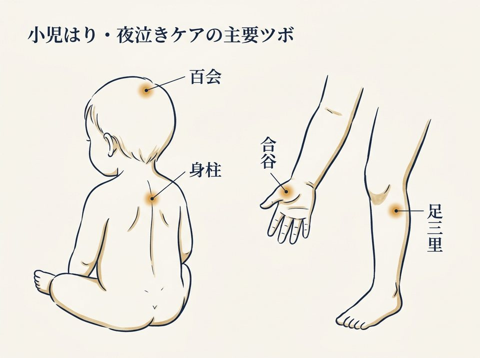
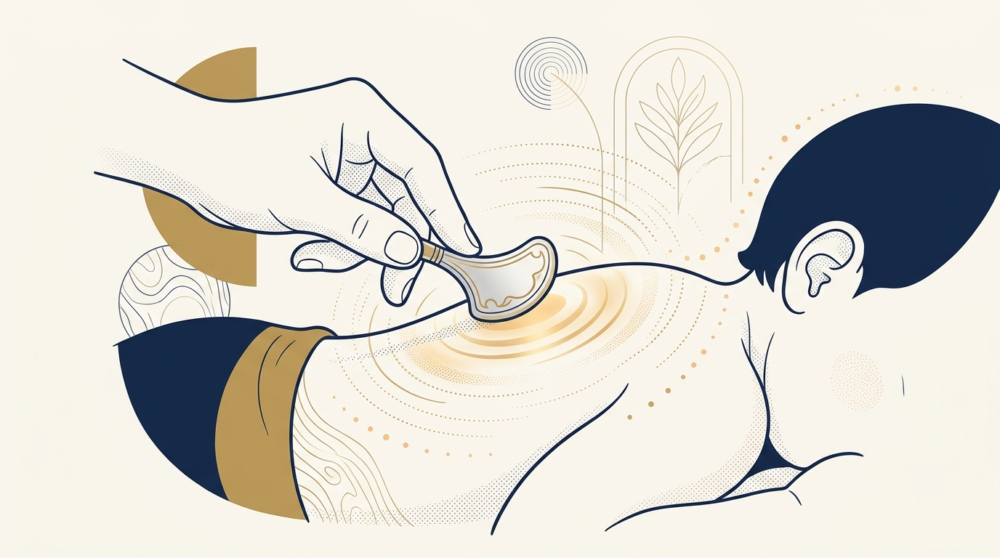

頭部や顔に多い先天性の黄色調あざ・脂腺母斑。皮膚科での二次腫瘍監視と切除治療を最優先にご案内します。


脂腺母斑の症状は、生まれた時から円形や楕円形をしている白や黄色のようなあざがあることです。あざができることの多い部位は、頭部や顔面です。
頭にできた場合は、その部分には髪の毛が生えてきません。そのため、その部分が円形脱毛症のようになります。年齢を重ねると、脱毛斑の表面が小さく盛り上がるようになっていき、でこぼこして表面の皮膚がざらざらになります。
脂腺母斑は、通常、生後すぐにまたは生後数ヶ月以内に見られる皮膚の先天的異常です。この状態は主に頭皮や顔に現れますが、体の他の部分に出現することもあります。脂腺母斑は一般的に良性ですが、生涯にわたって監視が必要な場合があります。以下に、脂腺母斑の主な症状を詳しく説明します。
色: 脂腺母斑は、黄色っぽい、オレンジ色、または肌色に見えることが多いです。
形状: オーバル形や楕円形で、しばしばドーム状に盛り上がっています。
質感: 滑らか、または若干ざらざらしていることがあり、脂っぽい感触を持つこともあります。
サイズ: 誕生時は通常小さく、時間と共に成長することがあります。
頭皮: 最も一般的な出現場所ですが、髪の毛が生える部分にあるため、発見が遅れることがあります。
顔: 特に眉毛の周辺、額、または頬に見られることがあります。
体の他の部分: 稀ですが、首、背中、胸など、体の他の部分に現れることもあります。
成長: 人によって成長速度は異なりますが、思春期に入るとホルモンの影響でサイズが大きくなることがあります。
質感の変化: 年齢と共に、質感がよりざらざらしたり、盛り上がったりすることがあります。
毛髪の喪失: 脂腺母斑がある部分では、髪の毛が生えないことがあります。
・潜在的な合併症
悪性化: 生涯にわたって、脂腺母斑が皮膚癌に変化するリスクがあります。変化の兆候には、急激な成長、色の変化、出血、痛みなどがあります。
脂腺母斑の改善方法は、切除することです。切除は、全身麻酔や局所麻酔をして行います。病変が小さい場合は傷口を縫い寄せることが可能ですが、病変が大きい場合はそのままでは傷口を縫い寄せることができません。
また、無理矢理縫い寄せた場合、変形が起きることもあります。そのような場合は周りの皮膚に少し切開をし、その部分の皮膚をずらしながら傷口を覆う方法を行うこともあります。
脂腺母斑の改善を行う時には、病変部を完全に取り切るだけでなく、できるだけ手術をした後の傷跡や変形を少ない状態にすることが大事なのです。
脂腺母斑の改善法は、個々のケースに応じて異なりますが、主にその位置、サイズ、および経験している症状や合併症のリスクに基づいて決定されます。以下に、一般的なオプションを紹介します。
小さく、症状を引き起こしていない脂腺母斑は、特に改善を必要としない場合があります。これらのケースでは、定期的な監視を行い、変化があった場合に迅速に対応します。
・外科的切除
脂腺母斑の最も一般的な改善法は外科的切除です。これは、特に悪性化のリスクがある場合や、美容上の理由で除去を希望する場合に推奨されます。手術によって母斑を完全に取り除くことができ、詳細な分析を行うことが可能です。大きな脂腺母斑や顔などの目立つ場所にある場合、美容的な結果を重視して、プラスチック外科医による手術が行われることもあります。
・レーザー
特定のケースでは、レーザーが脂腺母斑の外観を改善するために用いられることがあります。レーザーは、母斑を完全に取り除くことは難しいかもしれませんが、色や質感を改善することが期待できます。
CO2レーザーやエルビウム:YAGレーザーがこの目的で使用されることがあります。
・クライオセラピー
比較的小さな脂腺母斑に対しては、液体窒素を用いたクライオセラピーが適用されることがあります。これは脂腺母斑の一部を破壊することによって外観を改善する方法ですが、完全な除去には至らない可能性があります。
通常、脂腺母斑の改善に薬は主に用いられませんが、悪性化した場合には、癌の改善の一環として抗がん剤などが考慮されることがあります。
改善方法を選択する際には、年齢、脂腺母斑の位置やサイズ、潜在的な合併症のリスク、および本人の希望を考慮します。
脂腺母斑そのものを直接改善するために薬を使用することは一般的ではありません。脂腺母斑の主な改善法は外科的切除やレーザーなどの物理的手段です。ただし、脂腺母斑が悪性化した場合や、脂腺母斑に関連する他の皮膚状態が発生した場合には、薬が考慮されることがあります。
・悪性化した場合の薬
標的薬: 特定の遺伝子変異を標的とした薬があり、悪性腫瘍の成長を抑えることができます。例えば、基底細胞癌に対してはヘッジホッグ経路阻害剤が使用されることがあります。
抗がん剤: 皮膚がんが広がっている場合や他の方法が効果的でない場合に、抗がん剤が検討されることがあります。
・脂腺母斑に関連する皮膚状態に対する薬
局所ステロイド薬: 炎症を抑えるために使用されることがありますが、脂腺母斑そのものに対する改善というよりは、周囲の皮膚の炎症状態に対処するために用いられます。
・副作用
標的薬: 副作用は薬剤によって異なりますが、吐き気、疲労感、脱毛、肌の発疹などがあります。
抗がん剤: 副作用には、吐き気、嘔吐、脱毛、口内炎、感染リスクの増加などがあります。
局所ステロイド薬: 長期間使用すると、皮膚の薄くなること、色素沈着、局所的な感染リスクの増加などが起こる可能性があります。
母斑を完全に切除することによって続発性腫瘤の発生は見られなくなります。しかし、切除をした後に縫い合わせた部分は、線状の瘢痕が残ります。
頭部のあざを切除した場合は、瘢痕に沿って毛が生えてこなくなります。
▼ 詳しく知りたい項目だけタップして開けます（全項目の医学解説を収録）
01. 原因とメカニズム
脂腺母斑は、胎児期の皮膚細胞の異常な分化により脂腺や汗腺、毛包などの組織が混在して生じる先天性の良性母斑です。主に頭皮や顔面に黄色〜オレンジ色の円形・楕円形の斑として出生時からみられ、頭部では脱毛斑となります。思春期にホルモンの影響で表面が盛り上がりざらついてくるほか、生涯を通じて良性・悪性の二次腫瘍（基底細胞がん等）を生じるリスクがあるため、皮膚科・形成外科での継続監視や計画的な切除が推奨されます。
脂腺母斑に対する鍼灸は、「刺さない小児はり」による皮膚感覚〜自律神経の鎮静機序を通じて、お体本来の回復力を引き出します。
刺さない専用の「小児はり（てい鍼）」で、背中や手足の皮膚をリズミカルに優しく撫でます。
皮膚への穏やかな触覚刺激が脳へ伝わり、安心ホルモン（オキシトシン等）と副交感神経を促します。
興奮しやすい子どもの神経バランスを落ち着かせ、夜泣き・おねしょ・起立不調の土台を整えます。
保護者の方と寄り添いながら、お子さまの体調と成長ペースに合わせた無理のないケアを続けます。
02. よくあるお悩み
03. 当院の施術アプローチ
04. ツボ詳細・セルフケア一覧
実際の施術ではお一人おひとりの体質・症状に合わせて選穴しますが、アトピー性皮膚炎・慢性蕁麻疹・帯状疱疹痛・円形脱毛症の全身調整の臨床でよく用いられる代表的なツボの目安です。
| ツボ名 | 位置の目安 | 主な狙い | セルフケアの注意点 |
|---|---|---|---|
| 百会（ひゃくえ） | 頭頂部の中央 | 頭皮の微小循環（円形脱毛症等）とストレス性のかゆみ鎮静 | 皮膚に炎症や傷がある部位は避けて施術します。 |
| 曲池（きょくち） | 肘を曲げた外側のシワの先端 | アトピー・蕁麻疹のかゆみ（掻痒感）軽減の最重要穴 | 皮膚科の標準外用薬・内服薬と併用して行います。 |
| 合谷（ごうこく） | 手の甲、親指と人差し指の間 | 帯状疱疹痛の鎮痛補助・皮膚バリアの自律神経調整 | 帯状疱疹は発症早期の抗ウイルス薬内服が最優先です。 |
| 血海（けっかい） | 膝のお皿の内上角から指3本分上 | かゆみ・赤み・蕁麻疹の血流バランス調整 | 曲池と組み合わせる「曲池・血海」は皮膚ケアの定番です。 |
| 足三里（あしさんり） | 膝の下外側、指4本分下 | 腸管免疫と皮膚の回復力サポート | 慢性的な皮膚トラブルの体質づくりに用います。 |
| 三陰交（さんいんこう） | 内くるぶしの上から指4本分上 | 夜間のかゆみによる睡眠障害・乾燥肌の巡り改善 | 掻き壊しのある皮膚は避け清潔を保ってケアします。 |
05. 医学的根拠・国際査読論文（PubMed / Cochrane）
国際的な医学データベース（PubMed・Cochrane等）で報告されている小児はり・夜泣き・乳児疝痛・お腹ケア領域の代表的な査読済み鍼灸研究をまとめています（標準治療との併用や研究上の限界を含めて正確に掲載）。
| 年・研究デザイン | 対象・規模 | 主な結果 | 限界・出典 |
|---|---|---|---|
| 2017年 多施設3群RCT（ACU-COL） | 乳児疝痛・夜泣き 147名（スウェーデン） | 標準育児支援単独比で泣き時間の相対的減少を安全に確認。 | 当院では刺さない小児はりでさらに低刺激に対応。 Acupunct Med (PMID: 28093383) |
| 2018年 IPD系統的レビュー | 乳児疝痛 3 RCTs（n=307） | 盲検化の制約から一律の推奨には慎重姿勢を示唆。 | 発熱・脱水など急変時は小児科受診が最優先。 Acta Paediatr (PMID: 29338487) |
| 2016年 メタ解析 | 小児術後悪心嘔吐（PONV）8研究 | 内関（PC6）刺激による小児の吐き気軽減を報告。 | 術後・吐き気ケアの参考エビデンス。 Laryngoscope (PMID: 26864736) |
参考文献・出典
06. よくある質問（FAQ）
Q. 脂腺母斑はいつ頃切除することが多いですか？
思春期以降に盛り上がったり二次腫瘍が生じやすくなったりするため、全身麻酔や局所麻酔の負担も踏まえ皮膚科・形成外科医と適切な時期を相談して決めます。
Q. 脂腺母斑の部分に育毛目的で鍼を打つことはできますか？
いいえ、脂腺母斑は皮膚構造の先天的な母斑であり二次腫瘍のリスクもあるため、患部への直接刺鍼は禁忌です。必ず医療機関で管理を受けてください。
発達期に知的機能と適応機能の困難が生じる知的障害。多職種チーム支援を最優先し、穏やかに体調を支えます。
読み書きや計算に特異的な困難が生じる学習障害。医学的評価と個別学習支援を最優先に、学習に伴う心身の疲労を支えます。
生まれつきの脳機能発達の偏りによる発達障害。専門医と環境調整・周囲の理解を最優先に、睡眠と心身の疲れを穏やかに支えます。
規則違反や他者の権利侵害を繰り返す行為障害。児童精神科・環境調整を最優先し、神門・百会・合谷等で緊張と不眠を支えます。
成長ホルモン不足による低身長。小児内分泌科での早期精査と補充療法を最優先し、生活リズムを支えます。
深い眠りからの不完全な覚醒で混乱する錯乱性覚醒。睡眠環境の整備と自律神経の切り替えを穏やかに支えます。
CLINICAL RECOVERY CASES
銀座本院をはじめ各院での実際の改善事例を症状別に絞り込んでご確認いただけます。
おひとりで悩まず、まずはご相談ください
銀座本院・川口・大宮・横浜・博多・田無の各院でご予約を承っております。